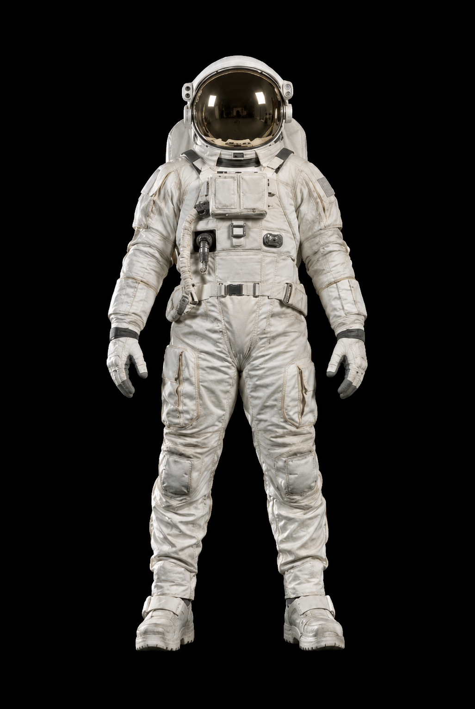
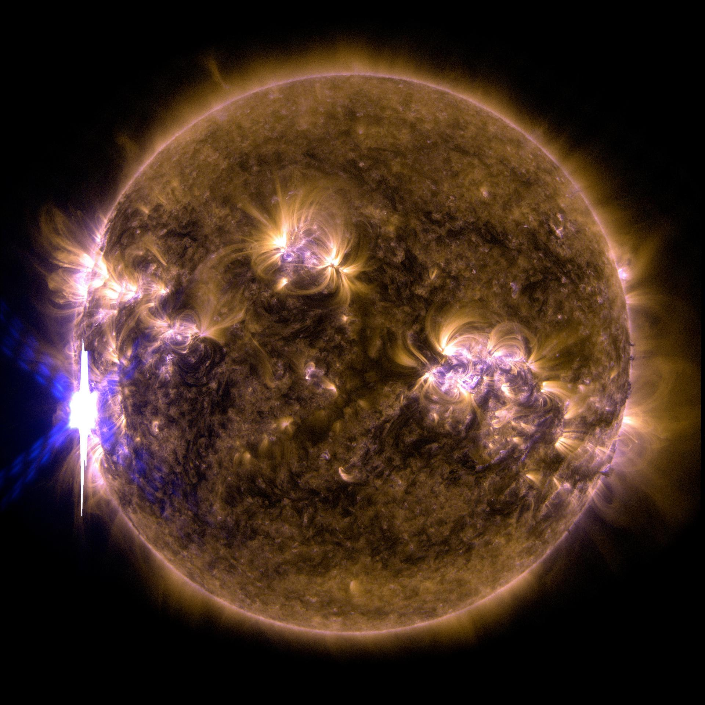
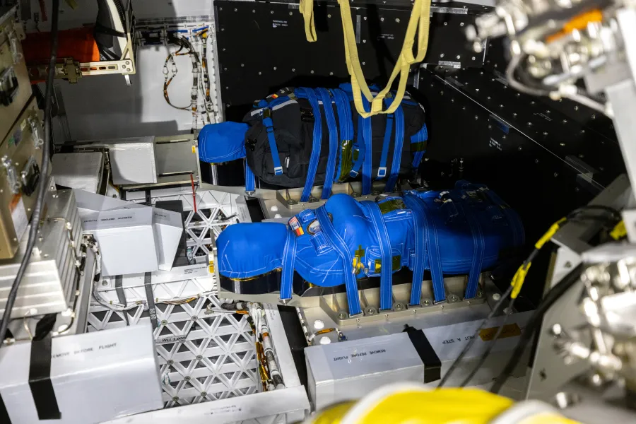
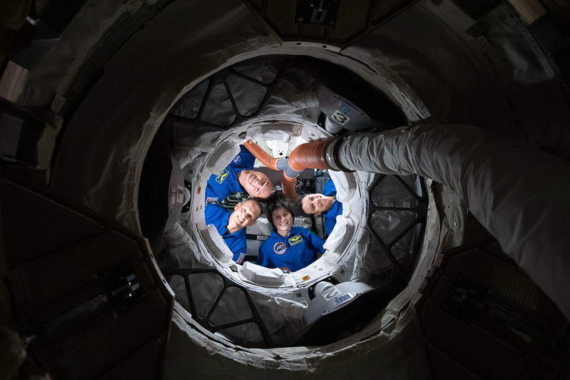
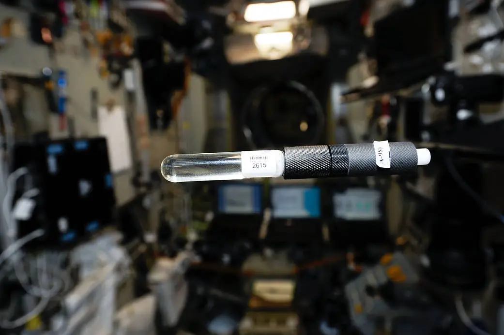
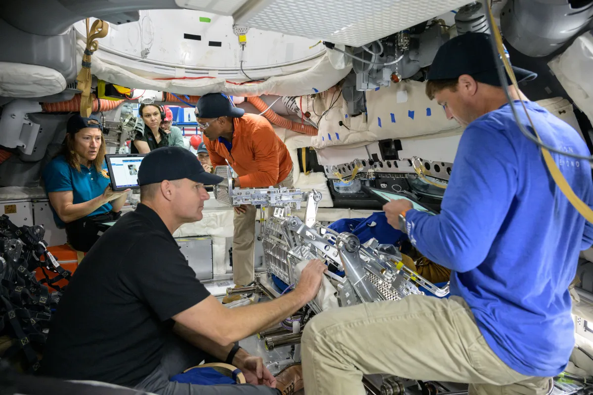

RWAWAITING
Reid Wiseman
Commander
HEART RATE—
SpO₂—
TEMPERATURE—
STRESS INDEX—
Waiting for backend telemetry.
Astronaut Safety, Tracking & Risk Analysis
Orion crew health monitoring · four assigned astronauts · simulated ASTRA vitals
Four official Artemis II crew members. All health readings shown here are fictional ASTRA simulations, not NASA medical data.
Artemis II · Simulated crew monitoring
Artemis II · Orion · ASTRA simulated crew profile
Hover over the astronaut to reveal the interactive health scan. Select an organ to view its vital reading.

Mission context, operational readiness, and crew health — all in one view.
NASA Orion mission concept: crewed flight around the Moon and return to Earth.
ASTRA models the four assigned Artemis II astronauts for a training demonstration inspired by Artemis II. Names and roles are NASA’s assigned crew; all health readings and operations are simulated.
ASTRA’s objective is to demonstrate how continuous monitoring can support crew awareness during extended spaceflight. The dashboard combines four illustrative measurements with a mission-level view of the crew.
Track heart rate, SpO₂, body temperature, and stress level across the crew.
Surface changes for further review using the project's anomaly-detection workflow.
Give operators a clear view of crew status, alerts, and operational context.
Values reflect the dashboard's synthetic astronaut data and refresh automatically.
Commander
Waiting for backend telemetry.
Pilot
Waiting for backend telemetry.
Mission Specialist
Waiting for backend telemetry.
Mission Specialist
Waiting for backend telemetry.
Example workflow for the ASTRA demonstration; not actual mission telemetry.
Compare crew vitals with demo baselines.
Perform routine mission tasks and record crew workload.
Review synthetic data trends and flagged readings.
Prepare a consolidated health and mission status report.
Artemis II mission information is from NASA. The four names and roles are the official Artemis II crew. Vitals, crew health, and timeline are synthetic.
Explore how the space environment can affect astronaut health — and the measures used or studied to reduce risk.
Solar-particle events and cosmic radiation can affect Orion crews beyond Earth’s magnetic protection.

Solar Flare
Radiation Testing
Radiation Shelter
Radiation DetectorArtemis II crew members share Orion’s compact cabin during the lunar flyby.
 Orion Crew Training Reference
Orion Crew Training Reference
 Confined Orion Cabin
Confined Orion Cabin
 Orion Crew Module Reference
Orion Crew Module Reference

Shared Living Space — OrionArtemis II travels far from Earth, increasing communication delays and limiting rapid emergency return options.

Orion’s lunar flyby exposes the crew to microgravity and gravity transitions.

Orion’s sealed crew cabin requires carefully controlled air, temperature, hygiene and equipment.

Artemis II-focused educational risk scenarios informed by NASA Human Research Program hazard categories. These are possible effects, not observed Artemis II crew symptoms or real-time exposure readings. Artemis II is a lunar flyby mission; these hazards are educational risk scenarios, not measured crew outcomes. Precautions are illustrative, not an official NASA medical protocol.
Current system alerts.
All demo sensors are connected. No active critical alerts.
Routine crew check-in is scheduled.
Wearable sensor feed last synchronized at 14:32 UTC . Link status is nominal.
Demo only. Not for medical decisions or emergency response.